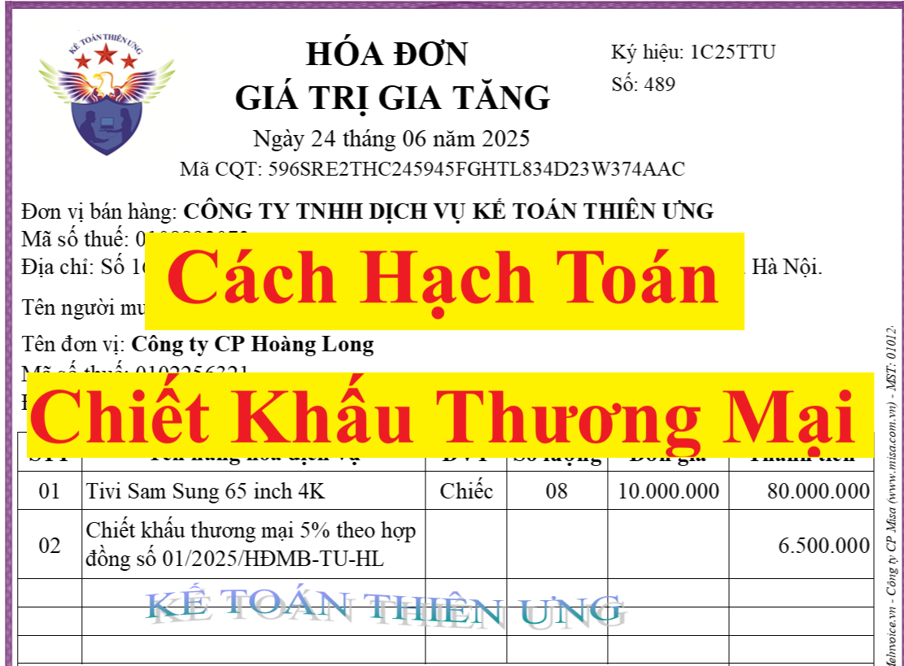

Hướng dẫn cách hạch toán chiết khấu thương thương mại cho bên bán và bên mua theo hóa đơn chiết khấu thương mại được lập theo nghị định 70/2025/NĐ-CP
Chiết khấu thương mại phải trả là khoản doanh nghiệp bán giảm giá niêm yết cho khách hàng mua hàng với khối lượng lớn.
Sau đây, công ty đào tạo Kế Toán Diệu Tâm sẽ hướng dẫn các bạn cách hạch toán chiết khấu thương mại theo Thông tư 200/2014/TT-BTC và Thông tư 133/2016/TT-BTC cho cả bên bán và bên mua
1. Cách hạch toán chiết khấu thương mại cho bên bán:
1.1. Đối với các doanh nghiệp áp dụng chế độ kế toán theo Thông tư 200/2014/TT-BTC thì hạch toán chiết khấu thương mại theo điều 81 của Thông tư 200 như sau:
* Tài khoản sử dụng:
Tài khoản 5211 - Chiết khấu thương mại: Tài khoản này dùng để phản ánh khoản chiết khấu thương mại cho người mua do khách hàng mua hàng với khối lượng lớn nhưng chưa được phản ánh trên hóa đơn khi bán sản phẩm hàng hóa, cung cấp dịch vụ trong kỳ
* Kết cấu và nội dung phản ánh của tài khoản 5211: Vì TK 5211 phản ánh phần giảm trừ của doanh thu (TK 511) nên TK 5211 sẽ có kết cấu ngược với kết cấu của TK 511 (nhóm tài khoản mang tính chất Nguồn Vốn), cụ thể TK 521 có kết cấu như sau:
+ Bên Nợ: Số chiết khấu thương mại đã chấp nhận thanh toán cho khách hàng;
+ Bên Có: Cuối kỳ kế toán, kết chuyển toàn bộ số chiết khấu thương mại sang tài khoản 511 “Doanh thu bán hàng và cung cấp dịch vụ” để xác định doanh thu thuần của kỳ báo cáo.
+ Tài khoản 5211 - Chiết khấu thương mại không có số dư cuối kỳ.
* Việc điều chỉnh giảm doanh thu do thực hiện chiết khấu thương mại được thực hiện như sau:
+ Khoản chiết khấu thương mại phát sinh cùng kỳ tiêu thụ sản phẩm, hàng hóa dịch vụ được điều chỉnh giảm doanh thu của kỳ phát sinh;
+ Trường hợp sản phẩm, hàng hoá, dịch vụ đã tiêu thụ từ các kỳ trước, đến kỳ sau mới phát sinh chiết khấu thương mại thì doanh nghiệp được ghi giảm doanh thu theo nguyên tắc:
+/ Nếu sản phẩm, hàng hoá, dịch vụ đã tiêu thụ từ các kỳ trước, đến kỳ sau phải chiết khấu thương mại nhưng phát sinh trước thời điểm phát hành Báo cáo tài chính, kế toán phải coi đây là một sự kiện cần điều chỉnh phát sinh sau ngày lập Bảng cân đối kế toán và ghi giảm doanh thu, trên Báo cáo tài chính của kỳ lập báo cáo (kỳ trước).
+/ Trường hợp sản phẩm, hàng hoá, dịch vụ phải chiết khấu thương mại sau thời điểm phát hành Báo cáo tài chính thì doanh nghiệp ghi giảm doanh thu của kỳ phát sinh (kỳ sau).
* Nguyên tắc kế toán: Chiết khấu thương mại phải trả là khoản doanh nghiệp bán giảm giá niêm yết cho khách hàng mua hàng với khối lượng lớn. Bên bán hàng thực hiện kế toán chiết khấu thương mại theo những nguyên tắc sau:
+ Trường hợp trong hóa đơn GTGT hoặc hóa đơn bán hàng đã thể hiện khoản chiết khấu thương mại cho người mua là khoản giảm trừ vào số tiền người mua phải thanh toán (giá bán phản ánh trên hoá đơn là giá đã trừ chiết khấu thương mại) thì doanh nghiệp (bên bán hàng) không sử dụng tài khoản này, doanh thu bán hàng phản ánh theo giá đã trừ chiết khấu thương mại (doanh thu thuần).
+ Kế toán phải theo dõi riêng khoản chiết khấu thương mại mà doanh nghiệp chi trả cho người mua nhưng chưa được phản ánh là khoản giảm trừ số tiền phải thanh toán trên hóa đơn. Trường hợp này, bên bán ghi nhận doanh thu ban đầu theo giá chưa trừ chiết khấu thương mại (doanh thu gộp). Khoản chiết khấu thương mại cần phải theo dõi riêng trên tài khoản này thường phát sinh trong các trường hợp như:
+/ Số chiết khấu thương mại người mua được hưởng lớn hơn số tiền bán hàng được ghi trên hoá đơn lần cuối cùng. Trường hợp này có thể phát sinh do người mua hàng nhiều lần mới đạt được lượng hàng mua được hưởng chiết khấu và khoản chiết khấu thương mại chỉ được xác định trong lần mua cuối cùng;
+/ Các nhà sản xuất cuối kỳ mới xác định được số lượng hàng mà nhà phân phối (như các siêu thị) đã tiêu thụ và từ đó mới có căn cứ để xác định được số chiết khấu thương mại phải trả dựa trên doanh số bán hoặc số lượng sản phẩm đã tiêu thụ.
1.2. Đối với các doanh nghiệp áp dụng chế độ kế toán theo Thông tư 133/2016/TT-BTC:
- Thông tư 133 không có tài khoản 5212
- Khi phát sinh các khoản giảm trừ doanh thu sẽ hạch toán trực tiếp vào bên Nợ của tài khoản 511
1.3. Hóa đơn chiết khấu thương mại
Cách hạch toán chiết khấu thương mại phụ thuộc vào hóa đơn chiết khấu cho từng trường hợp cụ thể
mà hiện nay quy định về việc lập hóa đơn có chiết khấu thương mại được thực hiện theo các quy định sau:
Theo quy định tại điểm đ, khoản 6 của Nghị định số 123/2020/NĐ-CP thì:
đ) Trường hợp cơ sở kinh doanh áp dụng hình thức chiết khấu thương mại dành cho khách hàng hoặc khuyến mại theo quy định của pháp luật thì phải thể hiện rõ khoản chiết khấu thương mại, khuyến mại trên hóa đơn. Việc xác định giá tính thuế giá trị gia tăng (thành tiền chưa có thuế giá trị gia tăng) trong trường hợp áp dụng chiết khấu thương mại dành cho khách hàng hoặc khuyến mại thực hiện theo quy định của pháp luật thuế giá trị gia tăng
Theo khoản 2 điều 14 của Nghị định 181/2025/NĐ-CP quy định về nguyên tắc xác định giá tính thuế GTGT có hiệu lực từ ngày 01/07/2025 thì:
2. Trường hợp cơ sở kinh doanh áp dụng hình thức chiết khấu thương mại dành cho khách hàng (nếu có) thì giá tính thuế giá trị gia tăng là giá bán đã chiết khấu thương mại dành cho khách hàng chưa có thuế giá trị gia tăng.
Theo Khoản 13 Điều 1 Nghị định 70/2025/NĐ-CP có hiệu lực từ ngày 01/06/2025 thì:
Trường hợp việc chiết khấu thương mại căn cứ vào số lượng, doanh số hàng hóa, dịch vụ thì số tiền chiết khấu của hàng hóa, dịch vụ đã bán được tính điều chỉnh trên hóa đơn bán hàng hóa, cung cấp dịch vụ của lần mua cuối cùng hoặc kỳ tiếp sau đảm bảo số tiền chiết khấu không vượt quá giá trị hàng hóa, dịch vụ ghi trên hóa đơn của lần mua cuối cùng hoặc kỳ tiếp sau hoặc được lập hóa đơn điều chỉnh kèm theo bảng kê các số hóa đơn cần điều chỉnh, số tiền, tiền thuế điều chỉnh. Bảng kê được lưu tại đơn vị và xuất trình khi cơ quan thuế hoặc cơ quan nhà nước có thẩm quyền yêu cầu. Căn cứ vào hóa đơn điều chỉnh, bên bán và bên mua kê khai điều chỉnh doanh thu mua, bán, thuế đầu ra, đầu vào tại kỳ lập hóa đơn điều chỉnh.
Chi tiết về cách lập hóa đơn chiết khấu thương mại thì các bạn có thể xem tại đây:
1.4. Cách hạch toán hóa đơn chiết khấu thương mại:
Việc hạch toán chiết khấu thương mại phụ thuộc vào hóa đơn chiết khấu theo từng trường hợp cụ thể như sau:
* Trường hợp 1: CKTM theo từng lần mua hàng (Mua 1 lần đủ luôn điều kiện được hưởng CKTM => Bên bán thực hiện chiết khấu cho bên mua ngay tại lần mua đó)
=> Khi lập hóa đơn trong trường hợp này cần phải thể hiện rõ khoản chiết khấu thương mại trên hóa đơn của lần mua đó
(Lưu ý: Số tiền tính thuế GTGT là số tiền đã chiết khấu thương mại)
Cách hạch toán:
|
Bên Bán |
Bên Mua |
- Không hạch toán riêng khoản chiết khấu thương mại.
- Doanh thu bán hàng phản ánh theo số tiền đã trừ chiết khấu thương mại (doanh thu thuần). |
- Hạch toán giá trị hàng mua theo số tiền đã trừ đi khoản chiết khấu |
|
Nợ TK 111/112/131: Số tiền đã trừ đi chiết khấu (Tổng thanh toán trên hóa đơn)
Có TK 5111: Doanh thu thuần (số tiền đã trừ chiết khấu)
Có TK 3331: Số tiền thuế GTGT trên hóa đơn (= Thuế suất X doanh thu đã trừ chiết khấu) (Nếu có)
|
Nợ TK 152/153/156...: Giá trị hàng mua đã trừ chiết khấu
Nợ TK 133: Số tiền thuế GTGT trên hóa đơn (Nếu có)
Có TK 111/112/331: Số tiền đã trừ đi chiết khấu (Tổng thanh toán trên hóa đơn)
|
(áp dụng cho cả thông tư 133 và thông tư 200)
* Trường hợp 2: CKTM sau nhiều lần mua hàng (Mua hàng nhiều lần mới đủ điều kiện được hưởng CKTM => Bên bán thực hiện chiết khấu cho bên mua tại lần mua cuối cùng hoặc kỳ tiếp sau)
Thì số tiền chiết khấu của hàng hóa, dịch vụ đã bán được tính điều chỉnh trên hóa đơn bán hàng hóa, cung cấp dịch vụ của lần mua cuối cùng hoặc kỳ tiếp sau
+ Nếu thực hiện CKTM tại lần mua cuối cùng thì khoản CKTM sẽ được thể hiện ở hóa đơn của lần mua cuối cùng này
(Điều kiện thực hiện: số tiền chiết khấu không vượt quá giá trị hàng hóa, dịch vụ ghi trên hóa đơn của lần mua cuối cùng)
+ Nếu thực hiện CKTM vào kỳ tiếp sau (lần mua tiếp theo) thì khoản CKTM sẽ được thể hiện ở hóa đơn bán hàng hóa dịch vụ của kỳ tiếp sau
(Điều kiện thực hiện: số tiền chiết khấu không vượt quá giá trị hàng hóa, dịch vụ ghi trên hóa đơn của kỳ tiếp sau)
+ Nếu chưa thực hiện CKTM tại lần mua cuối cùng hoặc chưa/không CKTM vào kỳ tiếp sau thì bên bán được lập hóa đơn điều chỉnh kèm theo bảng kê các số hóa đơn cần điều chỉnh, số tiền, tiền thuế điều chỉnh để thực hiện CKTM cho bên mua (Thực hiện như trường hợp 3 đưới đây)
+ Lưu ý: Nếu số tiền chiết khấu mà vượt quá giá trị hàng hóa, dịch vụ ghi trên hóa đơn của lần mua cuối cùng hoặc kỳ tiếp sau thì bên bán được lập hóa đơn điều chỉnh (kèm theo bảng kê) để thực hiện chiết khấu thương mại cho người mua (Thực hiện như trường hợp 3 đưới đây)
Ví dụ như:
+ Tổng số tiền CKTM được hưởng là: 5.000.000đ
+ Tổng giá trị hàng hóa dịch vụ của lần mua hàng cuối cùng là: 4.000.000đ
=> Số tiền chiết khấu đang lớn hơn (vượt quá) số tiền hàng của lần mua cuối cùng (Nếu xuất chung 1 hóa đơn thì tổng giá trị của hóa đơn sẽ ra kết quả âm)
=> Không xuất chung khoản chiết khấu thương mại này vào lần mua cuối cùng => Mà phải lập riêng 1 hóa đơn điều chỉnh cho khoản CKTM
Cách hạch toán cho từng lần mua như sau:
|
Hóa đơn |
Bên Bán |
Bên Mua |
Tại các lần mua chưa thực hiện chiết khấu
(do chưa đủ điều kiện hoặc đã đủ những chưa thực hiện CK) |
- Khi lập hóa đơn: không thể hiện khoản CKTM trên hóa đơn
- Khi hạch toán doanh thu: theo số tiền chưa có chiết khấu (Hạch toán theo thông tin trên hóa đơn đầu ra) |
Hạch toán giá trị hàng mua theo số tiền chưa có chiết khấu (Hạch toán theo thông tin trên hóa đơn đầu vào) |
|
|
|
|
Tại lần mua cuối cùng
Người bán thực hiện CKTM cho người mua trên hóa đơn |
- Không hạch toán riêng khoản chiết khấu thương mại.
- Doanh thu bán hàng phản ánh theo giá đã trừ chiết khấu thương mại (doanh thu thuần).
Hạch toán:
Nợ TK 111/112/131: Số tiền đã trừ đi chiết khấu (Tổng thanh toán trên hóa đơn)
Có TK 5111: Doanh thu thuần (số tiền đã trừ chiết khấu trên hóa đơn)
Có TK 3331: Số tiền thuế GTGT trên hóa đơn (= Thuế suất X doanh thu đã trừ chiết khấu) (Nếu có)
|
- Hạch toán giá trị hàng mua theo giá đã trừ đi khoản chiết khấu
Hạch toán:
Nợ TK 152/153/156: Giá trị hàng mua đã trừ chiết khấu
Nợ TK 133: Số tiền thuế GTGT trên hóa đơn (Nếu có)
Có TK 111/112/331: Số tiền đã trừ đi chiết khấu (Tổng thanh toán trên hóa đơn)
|
(áp dụng cho cả thông tư 133 và thông tư 200)
* Trường hợp 3: CKTM khi kết thúc chương trình (kỳ) chiết khấu hàng bán
(Trường hợp đến cuối kỳ bên bán mới xác định được số lượng hàng mà nhà phân phối đã tiêu thụ => Khi đó mới tổng hợp được doanh số bán hoặc số lượng sản phẩm đã tiêu thụ => Khi đó mới có căn cứ để xác định được số chiết khấu thương mại phải trả cho người mua)
=> Bên bán được lập hóa đơn điều chỉnh kèm theo bảng kê các số hóa đơn cần điều chỉnh, số tiền, tiền thuế điều chỉnh.
Bảng kê được lưu tại đơn vị và xuất trình khi cơ quan thuế hoặc cơ quan nhà nước có thẩm quyền yêu cầu.
(Bên bán sẽ lập hóa đơn điều chỉnh giảm: Số tiền chiết khấu thương mại giảm trừ cho người mua sẽ ghi số âm)
Căn cứ vào hóa đơn điều chỉnh, bên bán và bên mua kê khai điều chỉnh doanh thu mua, bán, thuế đầu ra, đầu vào tại kỳ lập hóa đơn điều chỉnh.
Cách hạch toán:
Căn cứ vào hóa đơn điều chỉnh của người bán đã lập để thực hiện chiết khấu thương mại
Hạch toán:
* Bên bán: Phải hạch toán theo dõi riêng cho khoản CKTM
|
Thông tư 200/2014/TT-BTC |
Thông tư 133/2016/TT-BTC |
Nợ TK 5211: Khoản CKTM chưa có thuế GTGT cho người mua
Nợ TK 3331: Số tiền thuế GTGT của khoản CKTM (Nếu có)
Có TK 111/112/131: Tổng số tiền CK
|
Nợ TK 511: Khoản CKTM chưa có thuế GTGT cho người mua
Nợ TK 3331: Số tiền thuế GTGT của khoản CKTM (Nếu có)
Có TK 111/112/131: Tổng số tiền CK
|
* Bên mua:
Trường hợp khoản chiết khấu thương mại nhận được sau khi mua hàng tồn kho thì kế toán phải căn cứ vào tình hình biến động của hàng tồn kho để phân bổ số chiết khấu thương mại được hưởng dựa trên số hàng tồn kho còn tồn kho, số đã xuất dùng cho sản xuất sản phẩm hoặc cho hoạt động đầu tư xây dựng hoặc đã xác định là tiêu thụ trong kỳ
+/ Tiêu thức phân bổ: Phân bổ theo số lượng hoặc giá trị (như phân bổ chi phí mua hàng), hoặc có thể căn cứ theo quy định về điều kiện chiết khấu trong quy chế bán hàng có CKTM của người bán để lựa chọn tiêu thức phân bổ phù hợp.
Cả thông tư 133 và Thông tư 200 đều yêu cầu kế toán phải phân bổ số CKTM được hưởng như sau:
+ Nếu hàng tồn kho còn tồn trong kho thì ghi giảm giá trị hàng tồn kho:
Hạch toán ghi: Có TK 152/153/156…
+ Nếu hàng tồn kho đã bán thì ghi giảm giá vốn hàng bán;
Hạch toán ghi: Có TK 632
+ Nếu hàng tồn kho đã xuất dùng cho sản xuất thì ghi giảm chi phí tương ứng khi xuất dùng:
Hạch toán ghi: Có TK 621/623/627 (Thông tư 133 sử dụng TK 154)
+ Nếu hàng tồn kho xuất dùng cho hoạt động bán hàng, quản lý
Hạch toán ghi: Có TK 641, 642 (Thông tư 133 sử dụng TK 6421, 6422)
+ Nếu hàng tồn kho đã sử dụng cho hoạt động xây dựng cơ bản thì ghi giảm chi phí xây dựng cơ bản.
Hạch toán ghi: Có 241 – Xây dựng cơ bản dở dang
Một vài nghiệp vụ cụ thể của bên mua khi nhận được khoản chiết khấu thương mại:
+ Trường hợp mua Nguyên Vật Liệu:
b) Kế toán nguyên vật liệu trả lại cho người bán, khoản chiết khấu thương mại hoặc giảm giá hàng bán nhận được khi mua nguyên vật liệu:
- Trường hợp trả lại nguyên vật liệu cho người bán, ghi:
Nợ TK 331 - Phải trả cho người bán
Có TK 152 - Nguyên liệu, vật liệu
Có TK 133 - Thuế GTGT được khấu trừ.
- Trường hợp khoản chiết khấu thương mại hoặc giảm giá hàng bán nhận được sau khi mua nguyên, vật liệu (kể cả các khoản tiền phạt vi phạm hợp đồng kinh tế về bản chất làm giảm giá trị bên mua phải thanh toán) thì kế toán phải căn cứ vào tình hình biến động của nguyên vật liệu để phân bổ số chiết khấu thương mại, giảm giá hàng bán được hưởng dựa trên số nguyên vật liệu còn tồn kho, số đã xuất dùng cho sản xuất sản phẩm hoặc cho hoạt động đầu tư xây dựng hoặc đã xác định là tiêu thụ trong kỳ:
Nợ các TK 111, 112, 331,....
Có TK 152 - Nguyên liệu, vật liệu (nếu NVL còn tồn kho)
Có các TK 621, 623, 627, 154 (nếu NVL đã xuất dùng cho sản xuất)
Có TK 241 - Xây dựng cơ bản dở dang (nếu NVL đã xuất dùng cho hoạt động đầu tư xây dựng)
Có TK 632 - Giá vốn hàng bán (nếu sản phẩm do NVL đó cấu thành đã được xác định là tiêu thụ trong kỳ)
Có các TK 641, 642 (NVL dùng cho hoạt động bán hàng, quản lý)
Có TK 133 - Thuế GTGT được khấu trừ (1331) (nếu có).
Trường hợp sau khi đã xuất kho nguyên vật liệu đưa vào sản xuất, nếu nhận được khoản chiết khấu thương mại hoặc giảm giá hàng bán (kể cả các khoản tiền phạt vi phạm hợp đồng kinh tế về bản chất làm giảm giá trị bên mua phải thanh toán) liên quan đến nguyên vật liệu đó, kế toán ghi giảm chi phí sản xuất kinh doanh dở dang đối với phần chiết khấu thương mại, giảm giá hàng bán được hưởng tương ứng với số NVL đã xuất dùng để sản xuất sản phẩm dở dang:
Nợ các TK 111, 112, 331,....
Có TK 154 - Chi phí sản xuất kinh doanh dở dang (phần chiết khấu thương mại, giảm giá hàng bán được hưởng tương ứng với số NVL đã xuất dùng để sản xuất sản phẩm dở dang)
Có TK 133 - Thuế GTGT được khấu trừ (1331) (nếu có).
+ Trường hợp mua Công cụ dụng cụ:
b) Trường hợp khoản chiết khấu thương mại hoặc giảm giá hàng bán nhận được sau khi mua công cụ, dụng cụ (kể cả các khoản tiền phạt vi phạm hợp đồng kinh tế về bản chất làm giảm giá trị bên mua phải thanh toán) thì kế toán phải căn cứ vào tình hình biến động của công cụ, dụng cụ để phân bổ số chiết khấu thương mại, giảm giá hàng bán được hưởng dựa trên số công cụ, dụng cụ còn tồn kho hoặc số đã xuất dùng cho hoạt động sản xuất kinh doanh:
Nợ các TK 111, 112, 331,....
Có TK 153 - Công cụ, dụng cụ (nếu công cụ, dụng cụ còn tồn kho)
Có TK 154 - Chi phí SXKD dở dang (nếu công cụ, dụng cụ đã xuất
dùng cho sản xuất kinh doanh) Có các TK 641, 642 (nếu công cụ, dụng cụ đã xuất dùng cho hoạt động bán hàng, quản lý doanh nghiệp)
Có TK 242 - Chi phí trả trước (nếu được phân bổ dần)
Có TK 632 - Giá vốn hàng bán (nếu sản phẩm do công cụ, dụng cụ đó cấu thành đã được xác định là tiêu thụ trong kỳ)
Có TK 133 - Thuế GTGT được khấu trừ (1331) (nếu có).
+ Trường hợp mua hàng hóa:
Trường hợp khoản chiết khấu thương mại hoặc giảm giá hàng bán nhận được (kể cả các khoản tiền phạt vi phạm hợp đồng kinh tế về bản chất làm giảm giá trị bên mua phải thanh toán) sau khi mua hàng thì kế toán phải căn cứ vào tình hình biến động của hàng hóa để phân bổ số chiết khấu thương mại, giảm giá hàng bán được hưởng dựa trên số hàng còn tồn kho, số đã xuất bán trong kỳ:
Nợ các TK 111, 112, 331,....
Có TK 156 - Hàng hóa (nếu hàng còn tồn kho)
Có TK 632 - Giá vốn hàng bán (nếu đã tiêu thụ trong kỳ)
Có TK 133 - Thuế GTGT được khấu trừ (1331) (nếu có).
Trường hợp khoản chiết khấu thương mại hoặc giảm giá hàng bán nhận được sau khi mua hàng, kế toán phải căn cứ vào tình hình biến động của hàng tồn kho để phân bổ số chiết khấu thương mại, giảm giá hàng bán được hưởng dựa trên số hàng tồn kho chưa tiêu thụ, số đã xuất dùng cho hoạt động đầu tư xây dựng hoặc đã xác định là tiêu thụ trong kỳ:
Nợ các TK 111, 112, 331…
Có các TK 152, 153, 154, , 155, 156 (giá trị khoản CKTM, GGHB của số hàng tồn kho chưa tiêu thụ trong kỳ)
Có TK 241 - Xây dựng cơ bản dở dang (giá trị khoản CKTM, GGHB của số hàng tồn kho đã xuất dùng cho hoạt động đầu tư xây dựng)
Có TK 632 - Giá vốn hàng bán (giá trị khoản CKTM, GGHB của số hàng tồn kho đã tiêu thụ trong kỳ).
===========================

Như vậy là chúng ta đã xử lý song việc hạch toán chiết khấu thương mại, tiếp đó các bạn cần quan tâm đó là kê khai khoản này, chi tiết mời các bạn xem thêm: Cách kê khai hóa đơn chiết khấu thương mại
--------------------------------------------------
Các bạn muốn học thực hành làm kế toán tổng hợp trên chứng từ thực tế, thực hành xử lý các nghiệp vụ hạch toán, tính thuế, kê khai thuế GTGT. TNCN, TNDN... tính lương, trích khấu hao TSCĐ....lập báo cáo tài chính, quyết toán thuế cuối năm ... thì có thể tham gia: Lớp học kế toán thực hành thực tế tại Kế toán Diệu Tâm
__________________________________________________